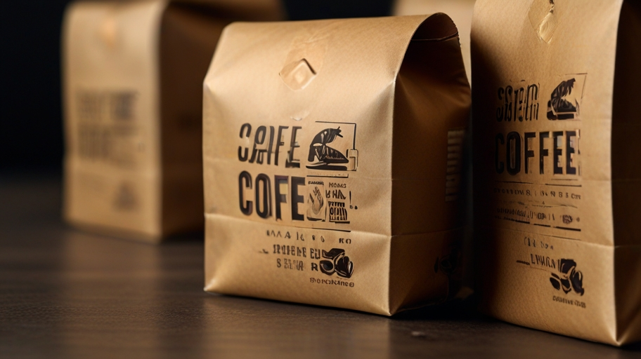

Whether you're searching for something new to warm your mug, seeking the best brew method for your favorite blend or exploring our rarest offerings, you’ve come to the right place.
From K-Cup pods to Starbucks® Premium Instant, we offer a wide selection of coffee to fill your cup.
Order nowStill undecided? Our new Coffee Quiz makes it easy to find the Starbucks® coffee that's made to be yours. Just answer five questions to find the one.
Learn moreExceptional coffees from around the world. Sourced for the season, roasted at Starbuzz Reserve® Roasteries and crafted with care.
Learn moreAs it has been from the beginning, our purpose goes far beyond profit. We believe Starbucks can, and should, have a positive impact on the communities we serve.
Learn to brew your perfect cupStarbucks and the Starbucks logo are registered trademarks of Starbucks Corporation used under license by Nestlé.
Keurig, K-Cup, and the Keurig trade dress are trademarks of Keurig Green Mountain, Inc., used with permission. Pike Place is a registered trademark of The Pike Place Market PDA, used under license.